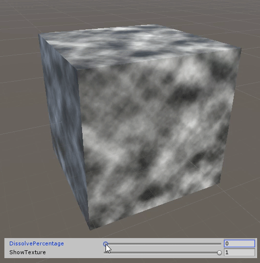

翻译作者


版权所有，禁止匿名转载；禁止商业使用；禁止个人使用。
本文作者是来自Glowfish Interactive的开发者Brecht Lecluyse，目前正在开发一款灵感源自经典机台，独特的鸟瞰视角动作冒险游戏Trifox。玩家在Trifox中扮演一只技艺超群的狐狸拯救被侵略的家园，今天将由Brecht Lecluyse为大家分享Trifox项目中遇到的角色与障碍物间的遮挡处理，以及溶解着色器相关的问题。
角色应该如何显示
定义问题
在开发过程中，我们面临的首要挑战就是在全3D的场景中让主角保持在头上相机范围内。也就是说如果有东西挡住了主角，是要选择避开这些遮挡物还是把遮挡物隐藏起来？假如选择隐藏的话，如何用一个视觉上可以接受的方式来让隐藏的过程符合游戏风格？如何保持不会妨碍游戏体验的空间感？
对于那些视角类似Trifox的游戏而言，这是一个很常见的问题，所以在开始执行方案之前，我们参考了一些方案。
鸟瞰视角
第一个方案是禁止关卡中出现任何会挡住玩家与镜头之间的巨大障碍物。这代表大部分区域必须非常广阔，而墙壁和障碍物要尽量保持低矮，或干脆避免使用它们，并且镜头与玩家要保持一定距离尽可能接近垂直往下看。这种形式非常适合"街机"，或场景中所有物体都面向同一个方向的传统45度角RPG。然而在我们的案例中，视角与角色的距离拉远会导致玩家与主角产生疏远感。同时也会使场景显得更加不自然，使玩家不容易感受我们的游戏、沉浸感以及视觉风格。
鸟瞰视角案例：Arrow Head的Helldivers
切割及掀盖
下一个方案是对环境进行切割，你可以把场景想象为一个多层蛋糕，依照目前镜头区域让玩家只能看到某一层的内容。
例如，当主角站在建筑外时可以看到建筑的屋顶，而当他进入建筑内时，整个屋顶以及较高楼层就会被隐藏，只显示当下的楼层墙壁和地板。大多数情况下不显示屋顶，这样能避免额外的处理工作。这种方法能够给玩家自然进出建筑物的感觉，让游戏能有更复杂的关卡设计和更强的空间感。虽然我们依旧需要将镜头定位在一个合适的距离并向下看，但由于障碍物可以被隐藏或显示，建构环境的方法可以更自由。
为了进一步优化这个方法，我们隐藏墙壁和其他物体，决定它们是否遮挡我们的视野，是否允许更低的镜头角度及玩家角色视野更近。
_files/Image.png)
掀盖式镜头范例：Firaxis Games的XCom:Enemy Unknown
这种方法唯一的缺点是会让人感觉不太自然。虽然可以通过淡出和使用透明材质来降低这种感觉，但整体来说，我们希望尽可能不要用这些效果来避免重绘的效能问题和全屏幕的透明覆盖。这种方法确实效果不错，但对于我们的游戏而言仍然不是非常理想。
自然演化
在考察了一些解决方法之后，我们仍旧感觉有些问题要解决。这些方法在大多数游戏中都运作良好，但在这个项目上，我们总感觉似乎缺了点什么。
我们想要达成以下目标：
障碍物应该要平滑而自然的被隐藏。
关卡企划要能控制哪些东西能够被隐藏，于是我们就可以保留一部分能够遮挡视野的物体，在环境中增加纵深感。
镜头和角色之间的距离发生变化时，系统应该运作如常。
遮挡处理应该在任何角度下都能运作。
障碍物被隐藏后，玩家依然能感受到它的存在。
设定工作需要尽可能简化。
我们整合了之前所有的方法后最终得出方案，并加了额外的障碍物隐藏风格。

当玩家往遮蔽物移动的时候，遮蔽物会逐渐变透明确保视野不被遮挡，同时清楚地表现出此处确实有物体存在。这样封闭空间场景依然可以保持封闭的感觉，墙面逐渐淡出也不至于太显眼。这代表我们可以让多个相迭大小形状不同的对象统一消失而不需要额外的设定。
如何达成这个目标？解决这个问题需要考虑如何创造一个很棒的隐藏效果，可用于各种游戏中的各种物体上。本文将说明实现最终方案的过程，从深入研究一些常用的溶解着色器技术开始。
强大的着色器
基础溶解着色器与世界空间UV
裁切噪点贴图
最简单的溶解效果可以使用2D噪点贴图和一种名为"裁剪"的着色器技术来实现。这个功能会把裁剪值大于或等于0的部分画到屏幕上，所有小于0的值被隐藏起来，镜头看到它当作一个触发开关处理材质。
上述的噪点贴图贴到Unity的方块示意图如下。


下一步是透过处理噪点贴图来让立方体逐渐消失。参考这个着色器和渐变贴图的原理要达成想要的结果不难，只需取出贴图中的灰阶值，并减去一个0到1之间的值，这个值可以作为透明度百分比。
halfgradient = tex2D(_MainTex, IN.uv_MainTex).r;
clip(gradient- _DissolvePercentage);
当把_DissolvePercentage变量往上加时，你会看到像这样的效果:

就这样完成基本的融解特效，是不是很简单?
你可能会注意到上图的方块会在大概75%的透明度下完全消失，而不是100%。这并不是我们想要的从0(黑)到1(白)之间完整转换范围，为什么会这样呢？
这是因为当贴图汇入引擎时会进行一次伽马校正。这种情况下我们需要将贴图当作线性数据贴图(Linear data texture)使用，也就是说我们需要将RGBA的值当作数据而非颜色来使用。为了确保信息不在汇入过程被改变。这可以透过调整贴图的导入设定来实现。
在"Import Settings"界面将贴图类型设为"Advanced"并启用"Bypass sRGB Sampling"。下面的动画展示了启用该设定前后的区别。在处理一些用到贴图数据更加复杂的着色器效果时，这个设定很重要。

_files/Image [1].gif)
_files/Image [2].gif)
这种方式对于一些可展开的网格非常适用，但如果是其它网格呢？如果有一些互相迭再一起的对象，能否做一个效果让它们表现得像是单一对象？
_files/Image [3].gif)
_files/Image [4].gif)
除非特地在溶解贴图上展开每一个对象，否则相邻的对象在溶解时会出现很大的不同。而对于缩放过的对象，还需要针对每一个缩放级别各自使用不同的材质来保持噪音细节同步。很明显这会导致很多设定工作，不太现实。
下一步：用程序化世界空间展开来替代手动展开。
世界空间UV
通常贴图是依照网格在建立时定义的UV坐标映射到网格表面的。现在我们想要替换这些UV坐标，改用一个基于表面在场景中位置的坐标系。透过增加Unity内建的着色器输入参数“worldPos”，我们就可以在着色器中存取到这个信息。
这里的范例你可以看到XY空间中移动的四边形用程序调整的结果。我们使用存在worldPos的变量里红色和绿色通道中的x和y世界空间坐标，而不是存取在网格中的UV坐标。
原本的:
half gradient = tex2D(_MainTex, IN.uv_MainTex).r;
用世界空间坐标代替UV坐标
half gradient = tex2D(_MainTex, IN.worldPos.rg).r;
_files/Image [5].gif)
这是一个常见的着色器技术，可以用于各种有趣的程序贴图技术。例如，可以用它自动在表面低于某个特定高度时产生浸水的效果。
再次把调整好的着色器用于立方体，这里需要一些额外步骤才能使世界空间贴图技术能够正常用于淡出效果。目前这个展开程序仅支持3D平面，这里的范例是XY平面，因为用到了x和y坐标来代替UV坐标。
_files/Image [1].jpg)
可以透过一些向量运算出能够作用于所有表面的UV集合，无论这些表面在空间中的位置和方向如何。最终实现一个贴图应用于网格后，它能在不同的方向、缩放以及位置下保持连续性。
_files/Image [6].gif)
最终应用到游戏的效果如下：
_files/Image [7].gif)
这足以应付大多数情况，但我们并未就此满足。从上图可以看出使用这种噪点可能会产生令人不适的边缘溶解效果。此外，由于使用了贴图，在接近对象的时候会观察到明显的像素变化。我们同样也无法保证噪点贴图能够在很大的表面角度差和互相交错的物体之间都保持很好的连续性。
_files/Image [2].png)
_files/Image [3].png)
以上就是第一章的内容。第二章将阐述如何解决使用噪点贴图产生的问题，改善溶解效果的整体质量，如何在Trifox中使用这个简单的技术来做出像是动态镜头遮挡处理以及一些很酷的游戏效果。